Relikvie
Dodatek zima 2010/2011: Následující seznam relikvií obsahuje stejnì jako ostatní pøedmìty v sekcích originální popisky pøímo ze hry. Ov¹em pøekladatelé se místy dopustili men¹ích chybek v nejednotnosti názvosloví a tak nìkteré vlastnosti pøedmìtù mohou pùsobit trochu zmatenì. Namísto vlastnosti Odolnost je zde pou¾it pojem Výdr¾, namísto Rychlosti je to Hbitost a Odolnosti proti elementùm jsou pou¾ity ve zkrácené formì jako +x bodù k Odolnostem (u artefaktù je tomu zas o trochu jinak). Naproti tomu u efektù Zlodìjství a Kryt se mi nepodaøilo jejich úèinek objasnit (dovednost Zlodìjství neboli Kradení neni v ¹estém díle navíc vùbec implementována). Vysávání ¾ivota se pak bude rovnat úèinkùm Upíøí, kdy jsou pøi úspì¹ném zásahu pøená¹eny body zdraví na nositele. Ostatní efekty by pak u¾ mìly být z popiskù jasné.
| 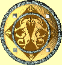 | Jméno: | Aegis |
| Zbroj: | +29 | |
| Legenda øíká, ¾e Aegis byl darem od Bohù mu¾i, který si pøál bojovat se stra¹livými medùzami v jejich království. ©tít je zrcadlový a zachraòuje u¾ivatele pøed pohledem medúzy. Nese také oèarování, které pomáhá chránit pøed ¹ípy, ale je velmi tì¾ký a trochu u¾ivatele zpomalí. (Speciální síly: Imunní ke Zkameòujícím efektùm, Krytí +20, ©tìstí a -20 Rychlost) | ||
| Cena: | 30000 | |
| 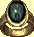 | Jméno: | Aphrodite |
| Vytou¾ené a vyhledávané hlupáky po vìky, tento nádherný prsten uhlazuje poko¾ku, èistí hlas a dramaticky zlep¹uje fyzickou krásu nositele, stejnì jako jeho osobnost. Prsten také nese prokletí ne¹tìstí a nositel obvykle brzy po nálezu prstenu umírá pøi nìjaké tragické nehodì. (Speciální sily: +100 Osobnost a -40 ©tìstí) | ||
| Cena: | 30000 | |
| 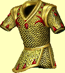 | Jméno: | Apollo |
| Zbroj: | +46 | |
| Tato unikátní zbroj poskytne svému majiteli ©tìstí, pomáhaje mu uniknout vìt¹inì elementálních útokù. Èerpá nicménì svoji energii z tìla nositele, dìlajíce tak no¹ení této zbroje riskantní nabídkou. (Speciální síly: +20 k Odolnostem, +20 ©tìstí a -30 Odolnost) | ||
| Cena: | 30000 | |
| 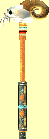 | Jméno: | Ares |
| Útok: | +14 | |
| Zranìní: | 2d4+14 | |
| Mocný váleèý palcát, Ares, hoøí ohnìm ze srdce hory, ze které byl vyroben. Ta samá magie, která tento magický ¾ár zpùsobuje, propùjèuje svému nositeli odolnost pøed ohnìm. (Speciální síly: +30 Ohnivé po¹kození, +25 Odolnost pøed Ohnìm) | ||
| Cena: | 30000 | |
| 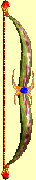 | Jméno: | Artemis |
| Støelba: | +12 | |
| Zranìní: | 5d2+12 | |
| Poctìn silou bouøe, Artemis støílí magické elektrické blesky. U¾ivatel luku by mìl být opatrný -- elementální magie se èerpá z luku a nadìlá více ¹kody, kdy¾ je s ní zasa¾en nositel. (Speciální síly: +20 elektrické po¹kození, -10 k Odolnostem) | ||
| Cena: | 30000 | |
| 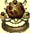 | Jméno: | Athena |
| Také znám jako Vzdìlancùv prsten, Athena velice ostøí a zlep¹ujì intelekt nositele za cenu fyzické síly. Pøesto¾e efekt na fyzické tìlo je skoro zmrzaèující, pro vìt¹inu èarodìjù je lákadlem pøíli¹ velkým, ne¾ aby odolali. (Speciální síly: +100 Intelekt a -40 Síla) | ||
| Cena: | 30000 | |
| 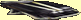 | Jméno: | Atlas |
| Zbroj: | +16 | |
| Legenda øíká, ¾e tento plá¹» byl vyhozen Bohem, kterému se znelíbil. Svému nositeli pøidává neporovnatelnou sílu za cenu velké ztráty rychlosti. (Speciální síly: +100 Síla a -40 Rychlost) | ||
| Cena: | 30000 | |
| 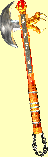 | Jméno: | Cronos |
| Útok: | +14 | |
| Zranìní: | 4d2+14 | |
| Spí¹e magická kuriozita ne¾ skuteènì u¾iteèná zbraò, Cronos fantasticky zvy¹uje nositelovu ¾ivotní sílu a zmen¹uje o polovinu jeho ¹tìstí. (Speciální síly: +100 ®ivoty a -50 ©tìstí) | ||
| Cena: | 30000 | |
| 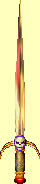 | Jméno: | Hades |
| Útok: | +15 | |
| Zranìní: | 3d3+15 | |
| Mocná zbraò, o které se øíká, ¾e mìla být na pøání masového vraha dopravena z Podsvìtí. Hades zpùsobuje stra¹né rány svým ¾iletkovým ostøím a neustále kapající kyselinou. Nejen stra¹ná zbraò, meè poskytuje obratnost mistra zlodìje pro odstraòování pastí a ¹tìstí 'dábla pøi úniku, pokud se past spustí. Hades pomalu a neúprosnì èerpá svoji sílu ze svého nositele. (Speciální síly: +20 Otrávení jedem, +20 ©tìstí, Zlodìjství a Vysávání ¾ivota) | ||
| Cena: | 30000 | |
| 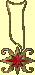 | Jméno: | Hera |
| Nìkdy zmiòovaný jako Amulet Hlupákù, tato kuriózní relikvie z èasù pøed Tichem dramaticky zvy¹uje osobní ¾ivotnost, magickou energii a ¹tìstí nositele na úèet Osobnosti. Zatímco oblékáte zbroj, tváø ochabne, oèi se stanou prázdnými a ¾ivotní jiskra vyhasne. (Speciální síly: +50 ®ivoty, +50 Mana, +50 ©tìstí a -50 Osobnost) | ||
| Cena: | 30000 | |
| 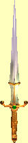 | Jméno: | Hercules |
| Útok: | +12 | |
| Zranìní: | 4d5+12 | |
| Obrovský meè Hercules naplòuje svého nositele silou sta mu¾ù. Pro zachování svého 'velký a hloupý' námìtu meè redukuje intelekt svého nositele. (Speciální síly: +50 Síla, +20 Výdr¾ a -30 Intelekt) | ||
| Cena: | 30000 | |
| 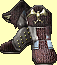 | Jméno: | Hermes |
| Zbroj: | +17 | |
| Relikvie z doby pøed Tichem, tyto boty musí obsahovat nìjakou skrytou magii, nebo» jsou velice tì¾ké a pøesto lehké jakmile se obují. Pùsobí na nervy a svaly nositele, zvy¹ujíce jeho rychlost a reflexy na nelidskou úroveò, ale zároveò zpùsobujíce nepøesnost. Boty byly vlastnìny mnohými, jak ¹ly èasy, v¹ichni v¹ak zemøeli pøi nìjaké nehodì, se kterou mìla co do èinìní rychlost ... jako vybìhnutí do kopce a následný pád dolù z útesu na vrcholku. (Speciální síly: +100 Rychlost a -40 Pøesnost) | ||
| Cena: | 30000 | |
| Jméno: | Odin | |
| Tato koruna je mocná relikvie, která chrání proti elementálním magickým útokùm v¹ech druhù, ale má kaz, ¾e znaènì nositele zpomaluje. (Speciální síly: +50 k Odolnostem a -40 k Rychlosti) | ||
| Cena: | 30000 | |
| 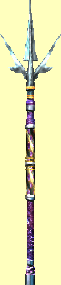 | Jméno: | Poseidon |
| Útok: | +15 | |
| Zranìní: | 2d6+15 | |
| Tato zbraò je pravdìpodobnì inspirována Regnanským námoønictvem, které pøijalo trojzubec za svoji oblíbenou váleènou zbraò. Poseidon naplòuje svého nositele dìsivou bojovou zuøivostí, zvy¹ujíce nositelovu sílu, odolnost a pøesnost za cenu osobní bezpeènosti. Tak stravující je nositelova touha znièit své nepøátele, ¾e opomíjí uhýbat ranám, kterých by se jinak mohl vyvarovat. Na druhou stranu, mrtví nepøátelé se (obvykle) nebrání. (Speciální síly: +20 Síla, +20 Výdr¾, +20 Pøesnost, -10 Tøída zbroje a -10 Rychlost) | ||
| Cena: | 30000 | |
| 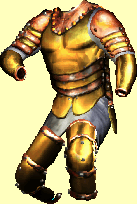 | Jméno: | Zeus |
| Zbroj: | +64 | |
| Tato zbroj snad byla mínìna pro Bohy. Nìkdy no¹ena barbarskými náèelníky, zbroj zvý¹í jejich fyzickou ¾ivotnost a magickou energii, ale za stra¹nou cenu. Dokonce i asparagus pak dosahuje lep¹ích výsledkù v testech intelektu. Jeden by si myslel, ¾e tak pøekotnou ztrátu my¹lenek musí následovat rychlá smrt, nicménì ¹tìstí, které zbroj pøitahuje, se zdá odvracet katastrofu. Èasto se toti¾ nositel zbroje stává tak hloupým, ¾e ji zapomene svléci. (Speciální síly: +50 ®ivoty, +50 Mana, +50 ©tìstí a -50 Intelekt) | ||
| Cena: | 30000 | |